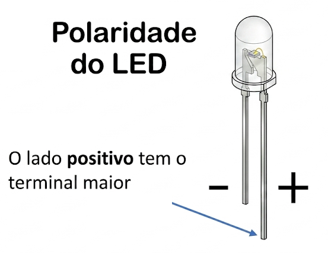
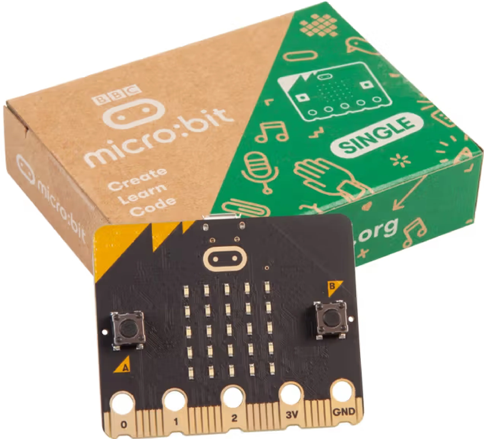

Micro:Bit · Formação de Multiplicadoras
No Capítulo 1 você conheceu as peças e entendeu como a energia flui. Agora é hora de ligar os fios e fazer um LED acender de verdade. Você vai aprender o que separa um circuito "vivo" de um "morto" — e depois vai colocar um botão para controlar isso com o dedo.
🎯 Ação — Monte na protoboard: Bateria → Resistor (220Ω) → LED → Bateria.
✅ Aprende — Sem resistor o LED queima, com ele brilha perfeitamente.
🎯 Ação — Insira um push button no meio do circuito do Desafio 2.
✅ Aprende — Circuito aberto vs. fechado sob seu controle!

Micro:Bit · Formação de Multiplicadoras

🎯 Ação — Ligue o GND da Micro:bit na linha negativa e o Pino 0 ao resistor + LED. No MakeCode, use
gravar pino P0 → 1 (💡 aceso) e gravar pino P0 → 0 (🌑 apagado).
✅ Aprende — O código substitui o dedo no botão! A programação é um interruptor inteligente.